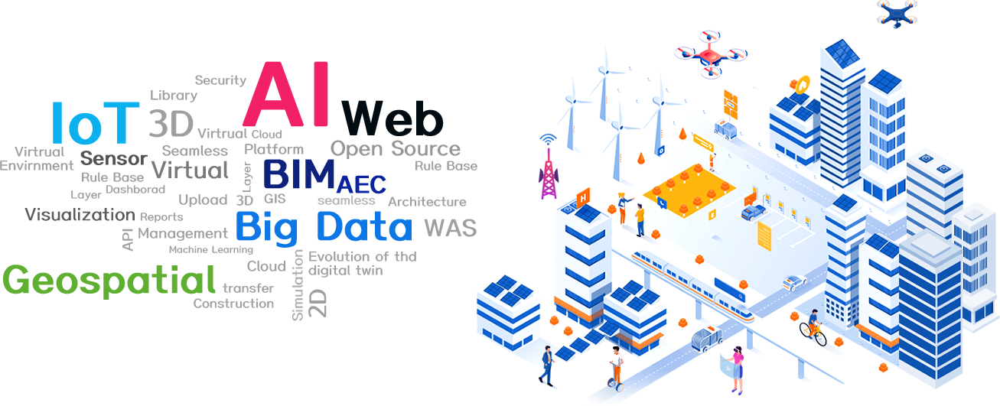
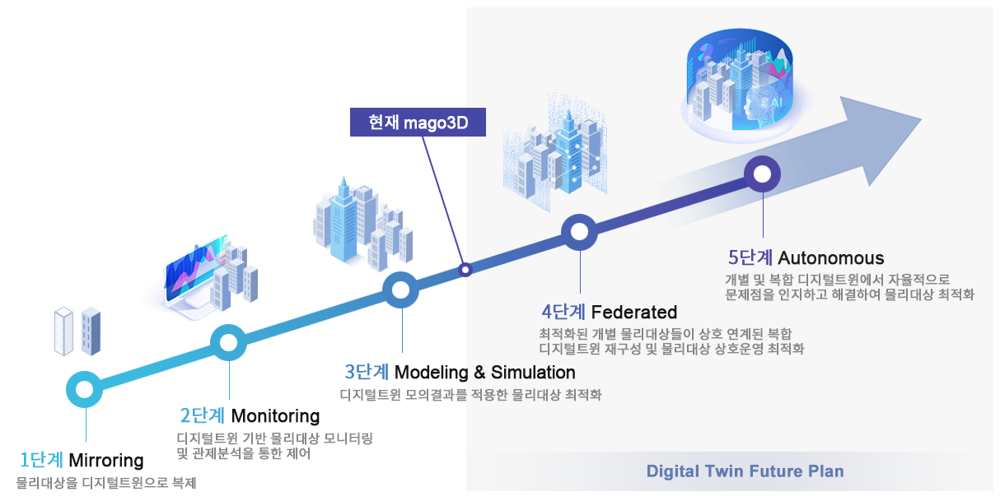

Experience Future with mago3D.
Objects are the city's past, sensor data is the city's present, and digital twins are the city's future.
mago3D uses 3D visualization, simulation, machine learning (AI), IoT sensor, and big data analysis.
We provide the best answer that customers want.
mago3D LIVE DEMO
mago3D uses 3D visualization, simulation, machine learning (AI), IoT sensor, and big data analysis.
We provide the best answer that customers want.
summary
mago3D allows users to upload, automatically convert, and visualize, share and collaborate with ultra-large 3D BIM/AEC/GIS data with a web browser.
By applying various phenomena that can occur in reality to the simulation and real world in virtual space,
It is a digital twin platform that builds a safer and more efficient real world.

Characteristic
BIM/AEC
Integration of BIM/AEC (Architecture, Engineering, Construction) and 3D GIS
Browser
It runs on a web browser and
No plugins or Active-x installation required
No plugins or Active-x installation required
Seamless
Seamless integration of indoor/outdoor spaces
automatic conversion
2D/3D data upload, automatic conversion,
Visualization with web browser
Visualization with web browser
simulation
Various phenomena that can occur in reality
Simulation in virtual space
Simulation in virtual space
Cooperation
Automatic conversion, visualization, sharing of data with others, issues, and collaboration
flow chart

Applications
Architecture/Building/Facility
Large-capacity 3D building data in cities, towns and villages units quickly
Visualize and inquire various information using building properties.
Visualize and inquire various information using building properties.
Shipbuilding/Port/Marine
Block (ship) status and properties, moving objects management, visualization of various layers,
Manage the yard through IoT sensor data linkage, etc.
Manage the yard through IoT sensor data linkage, etc.
Environment
Various environmental fields such as wind, air quality, water resources, soil, and noise
Simulate.
Simulate.
future
Currently, mago3D has gone through the 3rd stage of digital twin that reflects various simulation results in virtual space to the real world.
We are advancing towards autonomous will through the 4-step alliance and the 5-step digital twin.
To this end, we are focusing on developing various IoT sensor data, big data analysis, and learning, inference, and perception functions using AI.

ⓒ Copyrighst All rights reserved.
Gaia 3D Co. Ltd.
#702 SJ Technoville, 278, Cherry Blossom-ro, Geumcheon-gu, Seoul
T. 02 3397 3475 F. 02 6767 0979
info@gaia3d.com
T. 02 3397 3475 F. 02 6767 0979
info@gaia3d.com
- About
- summary
- Characteristic
- flow chart
- Applications
- future
- Product
- CE/EE
- architecture
- Component
- Download
- product specification sheet
- Pricing
- Tech
- automatic conversion
- simulation
- sensor data
- Demo
- Architecture/Building/Facility
- Shipbuilding/Port/Marine
- Environment
- Transportation/Air
- Defense/Others
- Support
- installation guide
- User Guide
- FAQ
- Contact